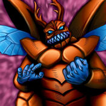

Kuwagata α

STATS
ATK: 1250
DEF: 1000
DECK COST
Deck Cost per Card: 23
Fusion List (2 Possible Fusions)
Kuwagata α + Ganigumo = Kwagar Hercules
Kuwagata α + Giant Scorpion of the Tundra = Kwagar Hercules